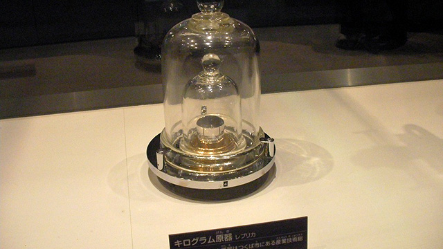

出典:blog-imgs-35.fc2.com
地味だが興味をソソられ
自称思春期の池村君は、ときどき科学ニュースをチェックしています。
最近では「探査機が冥王星に接近」「地球に似た惑星の発見」など、天体関連の面白そうなニュースが目立っていました。
そんな中、非常に地味ではあるんですが、「ヘ～そうなんだ」という記事を見つけました。
それは、
『1kgの定義、原器から「原子の数」へ』
（※NATIONAL GEOGRAPHIC日本版2015.07.22より）
というもの。
物事、特に自然界や数学界の事柄って、何であっても最初の定義（取り決め）っていうのが重要ですよね。
例えば「1メートル」とはどのように決められているか。
いろいろ変遷はありましたが、現在では「光が真空中を299792458分の1の時間で進む距離」とされています。
そうやって基準を決めて初めて2mや5kmがどれぐらいの長さかっていうことが決まるわけです。
で、今回の記事によると、どうやら質量の基準である「1kg」の定義を、数年後に改めて決め直そうという話になっているらしいのです。
今現在はどのような定義になっているかというと、19世紀後半に作られた円柱状の「キログラム原器」というものを基準としています。
これはプラチナとイリジウムの合金でできていて、複製が数十個作られ厳重保管されているみたいですね。
要は、「この合金をこの体積の分だけ用意したものを1kgとしようぜ」っていうことです。
ところがこれがちょっと微妙らしく、今よりももっと高精度の定義にした方がいいよ、ってことになったようなのです。
確かに読んでみるとなるほどと思いました。
まず、質量を決めるものですから、何か余計なものがくっついたりすると（おそらく指紋レベルでもダメなのかも）狂ってしまうから、しっかりアルコールや蒸気などで洗浄するらしいのですが、それでも原器本物と持ち寄った複製の質量がいつの間にか違ってしまったというのです。
原因はよくわからないとのこと。
ただし、科学者の弁によると、キログラム原器は触るのも怖いと。
少しさすって原子が数個でもはがれたら質量が変わるからという理由らしいです。
確かに…。
しかもたちが悪いことに、質量に差が出た場合、どちらが重くなった又は軽くなったということが判別できない。
これには苦笑してしまいましたが、結局は比較しかできない以上、どちらが完璧な1kgなのかが決まらない限りそうなわけで…。
そんなこんなで、新たに決め直そうとしている基準が「アボガドロ定数」だというのです。
アボカドじゃないよ、アボガドロ
もともとアボガドロ定数というのは、炭素12g中に含まれる炭素原子の総数で、約6.02×1023個。
つまり新基準としては、逆にアボガドロ定数から1kgや1gを決めよう（つまり原子を○個集めた状態を□gとするみたいな決め方）ってことらしいです。
ん？ ちょっと待てよ、アボガドロ定数がもともと炭素12g中の原子数で決められたものなのに、それじゃあイタチゴッコというか、卵と鶏どちらが先かみたいな問題にならない？
と思って調べてみると、一応それは大丈夫らしい。
ざっくり言うと、おそらく現時点で不純物の少ないケイ素（シリコン）なので、
「とりあえずケイ素の原子を何個分で1kgとしましょ！」
ってこと（だと思います…）。
そうやって原子の個数から定義し直すと、今まで扱っていた1kgの量と基本的にズレれちゃうはずなので、なるべくそうならないように原子の個数を調整して定義すれば丸く収めるはず（だと思います…）。
余談ですが…
ところで、「質量」というのは「重さ」とは別物だということを皆さんは中学の理科で勉強しまたしたよね。
まあ要するにどこへいっても変わらない内臓量（原子がどれだけ集まっているかというイメージ）が質量であり、場所が変わると変わってしまうものが重さです。
具体的には、月へ行けば重力（天体がモノを引っ張る力）が６分の１になるので、重さはも６分の１になります。つまり重さとはその天体が引く力だと言い換えられます。
何もない宇宙空間であれば引く力が存在しませんから重さはゼロです。
しかし質量は変わりません。どこへ行こうと内に秘めている原子の量は変わらないからです。
質量はgやkgで表記することは今も昔も変わりませんが、アラフォー世代やそれより少し若い世代の人では、教科書における力の表記が現在のN（ニュートン）ではなく、「g重、kg重」でしたね（懐かしい！）。
単位はなるべく世界共通の国際単位系で扱おうということで、いくつかの単位が教科書上で書き換えられました。
例えば熱量とかエネルギーを表すcal（カロリー）はJ（ジュール）に、気圧を表すmb（ミリバール）はhPa（ヘクトパスカル）に。
少し脱線しましたが、今の子どもたちは力のイメージが「1N」という言い方で定着していて、むしろ「100g重」って言っても「それ、どういうことですか？」と腑に落ちないみたいです。
中学の教科書には「1Nとは、質量100gの物体にかかる重力の大きさ」と書いてあります（本当は質量に重力加速度をかけ算したものが力なので、数値的には1Nは102g重ぐらいなのですが、中学ではわかりやすく切りの良い100にしています）。
なので、生活している中で頻繁に出てくるgを使ったg重という単位の方が感覚的にしっくりくるかと思いきや、ここ数年はニュートンで語った方が通じるようになりました。
ちなみに、ある女子生徒に
「料理とかお菓子作りで小麦粉500gはかりとったときの重量感が500g重っていう単純な話だよ」
と言ったら、
「料理とかやりませんし、5Nでいいじゃないですか」
との返答をいただきました。
ま、その通りでございます！
やっぱり思春期男子より思春期女子の方が上を行ってますね（笑）。